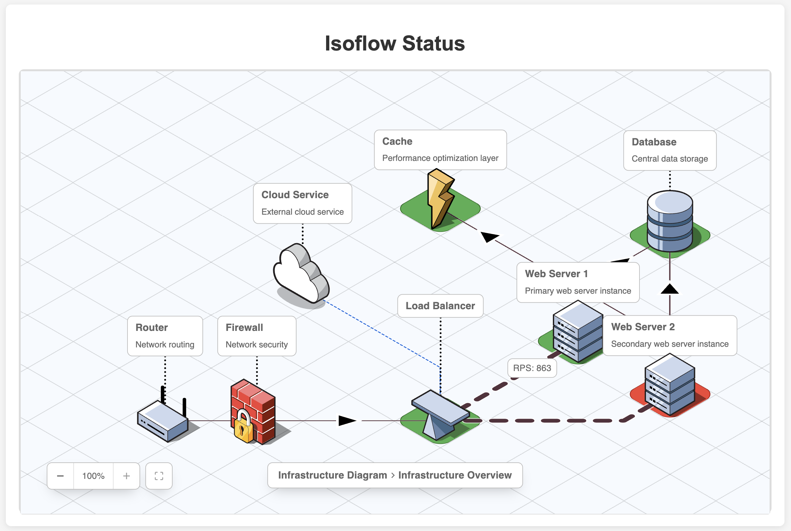

Stylus Documentation Home
Stylus (style + status) is a lightweight status page for home infrastructure. Configure a set of bash scripts that test the various parts of your infrastructure, set up HTML/SVG with a diagram of your network, and stylus will generate you a dynamic stylesheet to give you a visual overview of the current state.
Sections
To begin, Stylus ships with a number of examples that can be found in the source bundle. Copy the simple_network folder to a location of your choice. In this guide we will assume that it will appear in ~/stylus/.
Once you've got the example set up locally, we can walk though...
- Running Stylus
- Creating a Stylus Project
- Creating Monitors
- Creating Monitor Pages
- Configuration
- Advanced Configuration
There are a number of options for running Stylus.
Docker
The recommended option is to use Docker. A multi-arch Docker container is available under the repository mmastrac/stylus at https://hub.docker.com/r/mmastrac/stylus/.
Note that the container is hard-wired to run against a configuration file located in the container at /srv/config.yaml, and assumes that the remainder of the configuration is located in subdirectories of /srv.
# Assume that this is running against the stylus example, this will map the example directory into
# the container's /srv folder. The container will automatically load config.yaml from this folder!
docker run --name stylus -p 8000:8000 -v ~/stylus/:/srv mmastrac/stylus:latest
Static Binaries
If you would like to run it from a static binary, you may find a number of pre-built binary releases at https://github.com/mmastrac/stylus/releases.
# This will run against the example in ~/stylus/
stylus_<arch> ~/stylus/config.yaml
Cargo
For any platform where cargo is natively available, you can simply cargo install the stylus package.
cargo install stylus
stylus ~/stylus/config.yaml
From Source
If you have the source downloaded, you can run stylus directly from that source directory.
cargo run -- ~/stylus/config.yaml
Creating a Stylus Project
You can create a new stylus project by running the stylus init command. This
will create a new directory with a default configuration and a monitor.d
directory with a single monitor test.
$ stylus init ~/stylus
Initializing directory: "~/stylus"...
Done!
Run `stylus "~/stylus"` to start the server
$ tree ~/stylus/
├── config.yaml
├── monitor.d
│ └── monitor
│ ├── config.yaml
│ └── test.sh
└── static
└── README.md
Once you've created the project, you can run the stylus run command to start
the server.
stylus run ~/stylus
If you open your web browser to http://localhost:8000, you should see a
very basic default page with a green status:
Stylus
Updated at 2025-07-08T22:46:07.257Z
Monitor Status Exit Log monitor green Success (0) Log
By default, stylus will render a basic summary page for all of your monitors, which allows you to work on your monitors before you've created any pages.
Creating Monitors
A monitor is a script that is run periodically to check the status of a system.
Monitors are defined in the monitor.d directory in a Stylus project.
Monitors consist of a configuration file and a test script.
Using the project we created in the previous section, let's take a look at the monitor that was created for us. The configuration from the initial project is:
$ cat ~/stylus/monitor.d/monitor/config.yaml
interval: 30s
timeout: 10s
command: test.sh
$ cat ~/stylus/monitor.d/monitor/test.sh
#!/bin/sh
echo 'Write your test script here'
The interval and timeout fields are used to control how often the monitor
is run and how long it is allowed to run for. The command field is the path
to the test script.
The test script is a simple shell script that will be run by the monitor.
To simplify development of monitors, stylus provides a stylus test command
that will run the test script and display the status of the monitor after it
completes.
$ stylus test ~/stylus/config.yaml --monitor monitor
Monitor Log
-----------
<timestamp> [exec ] Starting
<timestamp> [stdout] Write your test script here
<timestamp> [exec ] Termination: 0
State
-----
{
"id": "monitor",
"config": {
"interval": "30s",
"timeout": "10s",
"command": "test.sh"
},
"status": {
"status": "green",
"code": 0,
"description": "Success",
"css": {
"metadata": {}
},
"metadata": {},
"log": [
// ...
]
},
"children": {}
}
CSS
---
/* monitor */
/* Default rules */
[data-monitor-id="monitor"] {
--monitor-id: "monitor";
--monitor-status: green;
--monitor-code: 0;
--monitor-description: "Success";
}
Let's say that we want to change the test script to check if the server can see
the internet. We'll using ping 8.8.8.8 as a proxy test for the internet
existing.
Let's update test.sh to:
#!/bin/sh
ping -c 1 8.8.8.8
Now let's run the test again:
$ stylus test ~/stylus/config.yaml monitor
Monitor Log
-----------
<timestamp> [exec ] Starting
<timestamp> [stdout] PING 8.8.8.8 (8.8.8.8): 56 data bytes
<timestamp> [stdout] 64 bytes from 8.8.8.8: icmp_seq=0 ttl=111 time=20.496 ms
<timestamp> [stdout]
<timestamp> [stdout] --- 8.8.8.8 ping statistics ---
<timestamp> [stdout] 1 packets transmitted, 1 packets received, 0.0% packet loss
<timestamp> [stdout] round-trip min/avg/max/stddev = 20.496/20.496/20.496/0.000 ms
<timestamp> [exec ] Termination: 0
...
As expected, the monitor successfully pings the internet.
More Complex Monitors
Monitors can be as simple or complex as you need them to be. For example, if you want to check the status of a service, you can use a monitor to check if the service is running.
Note that in the below examples, we're using the STYLUS_MONITOR_ID environment
variable to identify the monitor. This is a special variable that is set by
Stylus to the monitor's ID.
#!/bin/sh
set -xeuf -o pipefail
# Check the health of a service running on the monitor
curl --fail http://$STYLUS_MONITOR_ID:8080/health | jq --raw-output '.status'
You can use SNMP to check the status of a network device.
#!/bin/sh
set -xeuf -o pipefail
# Print the SNMP OID for the system description
snmpwalk -v 2c -c public $STYLUS_MONITOR_ID 1.3.6.1.2.1.1.1.0
# Print the SNMP OID for the system uptime
snmpwalk -v 2c -c public $STYLUS_MONITOR_ID 1.3.6.1.2.1.1.3.0
For more information on complex monitors, see the examples.
Creating Monitor Pages
Stylus is designed to be flexible and gives you a lot (too much?) freedom in how you configure your display.
Rendering Technologies
Stylus works particularly well with SVG diagrams, but can use any markup language that supports either CSS or dynamic updates via JSON data (eg: Angular, React, etc).
HTML
React is a popular library for building user interfaces. Using /status.json
as the data source, you can create a simple page with the current state of the
monitors.
The IsoFlow component for React allows you to load a model and render it as an isometric diagram with a little bit of glue in Stylus:

SVG
SVG is a flexible image format that conveniently supports CSS styling. See the SVG tutorial for more details on building a diagram using diagrams.net.
d3.js is a popular library for creating interactive
diagrams. See the d3.js example in the
repository for an
example of how to use it with Stylus.
Hooks and Endpoints
There are number of provided hooks for updating status, and depending on which technology you'd like to use for your status page, you can choose which one makes sense.
Monitors are independent of the the technology you use to render your page, so you can start with a very basic page and then add more complexity as you go.
CSS
The simplest way to create a monitoring page is to use CSS to update the status of the page.
The /style.css route serves live CSS with the current state of the monitors.
For each monitor, Stylus will generate a CSS block with the current state of the monitor as CSS variables (including any metadata your script has generated):
[data-monitor-id="web-server-1"] {
--monitor-id: "web-server-1";
--monitor-status: green;
--monitor-code: 0;
--monitor-description: "Success";
--monitor-metadata-rps: RPS: 702;
}
These CSS variables can be used for basic styling of the page, but it is highly recommended to generate more complex CSS rules to style the page.
In your project's config.yaml file, you can specify a number of rules to
style the page. For each rules in this section, a CSS block will be generated
for each monitor.
For example, adding these rules:
# Specify a number of rules - selector/declaration pairs. Each pair will generate a CSS block.
rules:
# Style the HTML/SVG with the appropriate status color
- selectors: |
#{{monitor.id}},
[data-monitor-id="{{monitor.id}}"] > *
declarations: |
background-color: {{monitor.status.css.metadata.color}} !important;
fill: {{monitor.status.css.metadata.color}} !important;
... will generate the following CSS block for each monitor:
/* web-server-1 */
/* Default rules */
[data-monitor-id="web-server-1"] {
--monitor-id: "web-server-1";
--monitor-status: green;
--monitor-code: 0;
--monitor-description: "Success";
--monitor-metadata-rps: RPS: 702;
}
#web-server-1, [data-monitor-id="web-server-1"] {
background-color: #d0e6a5 !important;
fill: #d0e6a5 !important;
}
See the CSS Configuration section for more details.
JSON
The /status.json route serves the current state of the monitors as JSON.
This can be used for dynamic rendering of the page, or for updating the page with a script.
Each monitor's latest status is available in the JSON response, along with its log output, and any metadata generated by the monitor script.
{
"id": "database",
"config": {
"interval": "5s",
"timeout": "15s",
"command": "..."
},
"status": {
"status": "green",
"code": 0,
"description": "Success",
"css": {
"metadata": {
"color": "#d0e6a5"
}
},
"metadata": {},
"log": [
"2025-07-08T23:51:05.732946+00:00 [exec ] Starting",
"..."
]
},
"children": {}
}
Server Configuration
The server configuration is stored in config.yaml in the root directory of the configuration. This controls the overall server behaviour (including listening ports) and points Stylus to the monitoring directory (monitor.d by default).
# Stylus will fail to load any configuration without a version of 1 (for future extensibility)
version: 1
# HTTP server configuration
server:
# Listen port
port: 8000
# Static file directory
static: static
# Monitor configuration
monitor:
# The top-level directory that stylus looks for monitor directories
dir: monitor.d
css:
# Arbitrary metadata can be associated with each of the four states: blank (no state),
# red (failed), yellow (timed out) or green (success).
# Use metadata to get prettier colors - note that we can add arbitrary string keys and values here
metadata:
blank:
color: "white"
red:
color: "#fa897b"
yellow:
color: "#ffdd94"
green:
color: "#d0e6a5"
# Specify a number of rules - selector/declaration pairs. Each pair will generate a CSS block.
rules:
# Style the HTML/SVG with the appropriate status color
- selectors: "
#{{monitor.id}},
[data-monitor-id=\"{{monitor.id}}\"] > *
"
declarations: "
background-color: {{monitor.status.css.metadata.color}} !important;
fill: {{monitor.status.css.metadata.color}} !important;
"
# Add some text for the status/return value of the script
- selectors: "
#{{monitor.id}} td:nth-child(2)::after
"
declarations: "
content: \"status={{monitor.status.status}} retval={{monitor.status.code}}\"
"
CSS Configuration
The CSS configuration controls how Stylus generates dynamic stylesheets based on monitor status. This includes metadata for different states and CSS rules for styling your HTML/SVG elements.
# config.yaml
# version: 1
# server: ...
# monitor: ...
css:
# Arbitrary metadata can be associated with each of the four states: blank (no state),
# red (failed), yellow (timed out) or green (success).
# Use metadata to get prettier colors - note that we can add arbitrary string keys and values here
metadata:
blank:
color: "white"
red:
color: "#fa897b"
yellow:
color: "#ffdd94"
green:
color: "#d0e6a5"
# Specify a number of rules - selector/declaration pairs. Each pair will generate a CSS block.
rules:
# Style the HTML/SVG with the appropriate status color
- selectors: "
#{{monitor.id}},
[data-monitor-id=\"{{monitor.id}}\"] > *
"
declarations: "
background-color: {{monitor.status.css.metadata.color}} !important;
fill: {{monitor.status.css.metadata.color}} !important;
"
# Add some text for the status/return value of the script
- selectors: "
#{{monitor.id}} td:nth-child(2)::after
"
declarations: "
content: \"status={{monitor.status.status}} retval={{monitor.status.code}}\"
"
CSS Interpolation
Interpolation is used in the css block to control the display. The interpolation library under the hood is handlebars-rust and any of the advanced syntaxes may be used.
Generally a monitor's output is interpolated from its status JSON, which will have a following form like the given example below:
{
"id": "my-id",
"config": {
"interval": "1m",
"timeout": "30s",
"command": "/full/path/to/test.sh"
},
"status": {
"status": "green",
"code": 0,
"description": "Success",
"css": {
"metadata": {
"color": "#d0e6a5"
}
},
"metadata": {
"key": "value1"
}
}
}
The root object is named monitor, and you may choose to use any of the keys as such:
{{monitor.id}} = my-id
{{monitor.status.status}} = green
{{monitor.status.css.metadata.color}} = #d0e6a5
{{monitor.status.metadata.key}} = value1
You may use additional text content around the interpolation blocks. For example, background-color: {{monitor.status.css.metadata.color}} !important; will interpolate to background-color: #d0e6a5 !important.
Monitor Configuration
Monitor configurations define how Stylus tests your infrastructure components. Each monitor consists of a test script that runs on a schedule and reports the status back to Stylus.
Standard Monitor
A standard monitor consists of a single test for a single host.
test:
# (optional) The internal ID to use for this test. If omitted, the ID is inferred from the monitor directory's name.
id: foo
# How often the test is run. The interval restarts from the last success or failure of the test.
interval: 60s
# How long the script will be given to run before it is killed.
timeout: 30s
# The test command to run, relative to the monitor directory. The PATH is not used and the file must be
# directly executable.
command: test.sh
Monitor States
Output from the test's standard output and standard error streams are captured and available from the logging endpoint.
- Blank: A test that has not run or completed yet
- Yellow: A test that has timed out
- Red: Tests that fail by returning a value other than zero
- Green: Tests that return zero (success)
Group Monitor
A group may be configured such that a single script may update states for multiple monitors. See Advanced Configuration for examples of configuring such a group monitor.
Testing Your Configurations
As monitor scripts using metadata can be somewhat tricky to get right, Stylus includes a --test command-line argument to allow you to develop your test script in a slightly more interactive manner. The output from --test will include the test script's stdout and stderr streams, plus the parsed monitor state as JSON, and the final rendered CSS.
Tests scripts may also set metadata associated with the run. More information on this is available in Advanced Configuration.
Advanced Configuration
Group Monitors
A group monitor allows a single test script's execution to update the state for multiple entities. For example, you may be able to scrape the state of multiple hosts from a single controller, or you may want to monitor the state of multiple ports on a single switch.
group:
# The ID pattern for this group. This ID must use interpolation from axis values to generate a set of
# globally unique IDs.
id: port-{{ index }}
# The configuration axes.
axes:
# The Axis name and a list of values
- name: index
values: [0, 1, 2, 3, 4, 5, 6, 7]
# A standard monitor configuration (see the Standard Monitor description)
test:
interval: 60s
timeout: 30s
command: test.sh
The group's test script is unique in that it must output state-modifying commands to its standard output. Each
of these state-modifying commands starts with the prefix @@STYLUS@@.
echo '@@STYLUS@@ group.port-0.status.status="yellow"'
echo '@@STYLUS@@ group.port-1.status.status="green"'
echo '@@STYLUS@@ group.port-2.status.status="yellow"'
echo '@@STYLUS@@ group.port-3.status.status="green"'
echo '@@STYLUS@@ group.port-4.status.status="green"'
echo '@@STYLUS@@ group.port-5.status.status="yellow"'
echo '@@STYLUS@@ group.port-6.status.status="yellow"'
echo '@@STYLUS@@ group.port-7.status.status="red"'
Metadata
A test script may update metadata for the monitor, including the built-in status and description fields. These commands start with the prefix @@STYLUS@@ and may be output to standard output or standard error.
An example of metadata update commands is shown below:
echo '@@STYLUS@@ status.description="Custom (yellow)"'
echo '@@STYLUS@@ status.status="yellow"'
echo '@@STYLUS@@ status.metadata.key="value1"'
These may be referenced via standard interpolation, such as {{monitor.status.metadata.key}}.
Environment variables
Stylus invokes all test scripts with a special environment variable named STYLUS_MONITOR_ID. This may be used
as a convenient way to test multiple monitors using shared scripts. For example, a test script may be configured
like so:
ssh $STYLUS_MONITOR_ID my-test-command
General Tips
There are several approaches you can take to monitoring with Stylus. This section covers general best practices and tips for writing effective monitor scripts.
Safe Scripting
Because monitor scripts may have a large number of moving parts, consider using safe shell scripting techniques to ensure that any failure of any kind will return an error code.
In addition set -x can be useful to print all commands that run as part of a
monitor script. These are available in the logging endpoints and will show you
the expansion of environment variables.
#!/bin/bash
set -xeuf -o pipefail
Testing Your Configurations
As monitor scripts using metadata can be somewhat tricky to get right, Stylus
includes a test command-line argument to allow you to develop your test
script in a slightly more interactive manner. The output from test will
include the test script's stdout and stderr streams, plus the parsed monitor
state as JSON, and the final rendered CSS.
Examples
See example configurations and use cases for Stylus.
Ping Monitoring
The simplest monitor is a ping script. One ping is usually enough for most cases. You can pass a timeout to ping, but Stylus will automatically kill processes if they run too long.
Basic Ping Script
#!/bin/bash
ping -c 1 ${STYLUS_MONITOR_ID}
Ping with Custom Host
#!/bin/bash
ping -c 1 8.8.8.8
Ping with Timeout
#!/bin/bash
ping -c 1 -W 5 ${STYLUS_MONITOR_ID}
When to Use Ping
Ping monitoring is ideal for:
- Basic connectivity testing
- Simple network reachability checks
- Quick health checks for network devices
- Testing internet connectivity
For more complex monitoring scenarios, consider using SSH, SNMP, or HTML/API scraping.
SSH Monitoring
SSH monitoring allows you to execute commands on remote systems and check their status. This is useful for monitoring servers, network devices, and other systems that support SSH access.
SSH Configuration
To make your life easier, you can collect all of your SSH credentials in a configuration file. The examples in this section will assume you've got a central SSH configuration file.
host pi-*
User matt
host tower
User root
host unifi-*
User admin
host *
IdentityFile /srv/ssh_id_rsa
Security Considerations
Depending on your security requirements, you may wish to loosen some of your SSH client's security check requirements. By disabling strict host key checking and host IP checking, your monitors will be more reliable but there will be some tradeoffs.
ssh <...> -oStrictHostKeyChecking=no -oCheckHostIP=no
Basic SSH Check
# Assumes that `ssh_config` lives in the same folder as this script
DIR="$( cd "$( dirname "${BASH_SOURCE[0]}" )" >/dev/null 2>&1 && pwd )"
SSH_CONFIG=$DIR/ssh_config
ssh_check () {
local host="$STYLUS_MONITOR_ID"
ssh -F $SSH_CONFIG $host -oStrictHostKeyChecking=no -oCheckHostIP=no "true"
}
ssh_check
SSH + Gather Basic Hardware Info
# Assumes that `ssh_config` lives in the same folder as this script
DIR="$( cd "$( dirname "${BASH_SOURCE[0]}" )" >/dev/null 2>&1 && pwd )"
SSH_CONFIG=$DIR/ssh_config
ssh_check () {
local host="$STYLUS_MONITOR_ID"
ssh -F $SSH_CONFIG $host -oStrictHostKeyChecking=no -oCheckHostIP=no \
"uname -a && uptime && cat /proc/cpuinfo | grep -i -E '(hardware|model|stepping|revision)' | sort | uniq"
}
ssh_check
When to Use SSH
SSH monitoring is ideal for:
- Server health checks
- Remote system monitoring
- Custom command execution
- Gathering system information
- Service status checks
For simpler connectivity tests, consider ping monitoring. For network devices, consider SNMP monitoring.
SNMP Monitoring
SNMP (Simple Network Management Protocol) is a useful way to write more complex checks for network devices, but the output of the tools requires some massaging.
Basic SNMP Check
snmp_check () {
local host="$STYLUS_MONITOR_ID"
ARR=`snmpbulkwalk -OsQ -c public $host ifTable`
jq -n --arg inarr "${ARR}" '[$inarr | split("\n")
| .[]
| capture("(?<key>[^\\.]+)\\.(?<idx>\\d+)\\s+=\\s+(?<value>.*)")
] | group_by(.idx) | .[] | from_entries'
}
# Some legacy devices only respond to SNMP v1
snmp_v1_check () {
local host="$STYLUS_MONITOR_ID"
ARR=`snmpwalk -v1 -OsQ -c public $host ifTable`
jq -n --arg inarr "${ARR}" '[$inarr | split("\n")
| .[]
| capture("(?<key>[^\\.]+)\\.(?<idx>\\d+)\\s+=\\s+(?<value>.*)")
] | group_by(.idx) | .[] | from_entries'
}
snmp_parse () {
cat - | jq -r '
# Only parse ethernet ports and omit anything that looks like a vlan port (ending with a .xxxx)
select(.ifType=="ethernetCsmacd" and (.ifDescr | test("\\.\\d+$") | not))
| "@@STYLUS@@ group.'$STYLUS_MONITOR_ID'-"
+ .ifIndex
+ ".status.status="
+ (if .ifOperStatus == "up" then "\"green\"" else "\"blank\"" end)'
}
# Map the SNMP JSON output to @@STYLUS@@ metadata updates
snmp_check | snmp_parse
When to Use SNMP
SNMP monitoring is ideal for:
- Network device monitoring (switches, routers, etc.)
- Interface status monitoring
- Network performance metrics
- Device health checks
- Legacy network equipment
For simpler connectivity tests, consider ping monitoring. For server monitoring, consider SSH monitoring.
HTML/API Scraping
Some devices can be tested using a simple cURL script, while others require more complex HTML parsing and API interaction.
Simple cURL Check
curl --silent --max-time 2 <url>
HTML Scraping with pup and jq
In other cases you may want to scrape HTML. The pup tool is included in the docker image to make this easier. You can use the json{} filter to pass a pre-processed HTML DOM tree to jq for further processing.
This example scrapes the power state from a Web Power Switch 7:
#!/bin/bash
set -euf -o pipefail
function fetch() {
curl --silent --max-time 2 --basic -u <credentials> <url> \
| pup -c "table table tr[bgcolor=#F4F4F4] json{}" \
| jq "[.[] | [.children | .. | .text? | select(. != null)] | { \"name\": .[1], \"state\": (.[2]==\"ON\") }]"
}
n=0
until [ "$n" -ge 10 ]
do
HTML=`fetch` && break
n=$((n+1))
done
echo $HTML | \
jq -r -e ". | to_entries | .[] | \"@@STYLUS@@ group.power-\" + (.key + 1 | tostring) + \".status.status=\" + if .value.state then \"\\\"green\\\"\" else \"\\\"blank\\\"\" end"
When to Use Scraping
HTML/API scraping is ideal for:
- Web-based device monitoring
- API endpoint health checks
- Web application monitoring
- Devices with web interfaces
- Custom dashboard monitoring
For simpler connectivity tests, consider ping monitoring. For server monitoring, consider SSH monitoring.
SVG
Short story: Using a tool like diagrams.net, create an SVG diagram of your network. Attach an SVG DOM attribute to the elements you'd like to style with status changes. If you're using diagrams.net, this can be done using the svgdata plugin. Alternatively, you can use the automatic identifiers generated by your SVG editor as your monitoring identifiers.
From the SVG you've generated, create CSS selectors and rules that will apply
styles to the appropriate elements as statuses change. The SVG fill attribute
is a good candidate to change, but ensure that you're using !important on all
your rules to override the fill colors created by your SVG editor.
Detailed guide
Enable one of the networking diagram sets on diagrams.net that matches the style of diagram you'd like to create.

For each of the networking elements you've dropped on the canvas, click the "edit data" button to add metadata.

Set a custom property named infra-id. This will be the ID we'll later use to configure the diagram.

Once you've completed your diagram, export it as an SVG.

These are the recommended options you can use to create a standalone SVG file.

The final result.

And the final SVG source:
<?xml version="1.0" encoding="UTF-8"?>
<!DOCTYPE svg PUBLIC "-//W3C//DTD SVG 1.1//EN" "http://www.w3.org/Graphics/SVG/1.1/DTD/svg11.dtd">
<svg xmlns="http://www.w3.org/2000/svg" style="background-color: rgb(255, 255, 255);" xmlns:xlink="http://www.w3.org/1999/xlink" version="1.1" width="181" height="167" viewBox="-0.5 -0.5 181 167">
<defs>
<filter id="dropShadow">
<feGaussianBlur in="SourceAlpha" stdDeviation="1.7" result="blur"/>
<feOffset in="blur" dx="3" dy="3" result="offsetBlur"/>
<feFlood flood-color="#3D4574" flood-opacity="0.4" result="offsetColor"/>
<feComposite in="offsetColor" in2="offsetBlur" operator="in" result="offsetBlur"/>
<feBlend in="SourceGraphic" in2="offsetBlur"/>
</filter>
</defs>
<g filter="url(#dropShadow)">
<g id="cell-f1RpjmRWZniSFc_S4n2y-1" content="<object label="" infra-id="firewall"/>" data-label="" data-infra-id="firewall">
<rect x="0" y="20" width="50" height="44" fill="none" stroke="none" pointer-events="all"/><path d="M 0 64 L 0 54.01 L 23.64 54.01 L 23.64 64 Z M 25 54.01 L 50 54.01 L 50 64 L 25 64 Z M 37.5 52.75 L 37.5 42.71 L 50 42.71 L 50 52.75 Z M 36.04 42.71 L 36.04 52.75 L 13.91 52.75 L 13.91 42.71 Z M 12.55 52.75 L 0 52.75 L 0 42.66 L 12.55 42.66 Z M 23.59 41.44 L 0 41.44 L 0 31.4 L 23.59 31.4 Z M 25 31.4 L 50 31.4 L 50 41.44 L 25.1 41.44 Z M 37.5 30.09 L 37.5 20 L 50 20 L 50 30.09 Z M 36.04 20.05 L 36.04 30.09 L 13.91 30.09 L 13.91 20.05 Z M 12.45 30.09 L 0 30.09 L 0 20.05 L 12.45 20.05 Z" fill="#00188d" stroke="none" pointer-events="all"/></g><g id="cell-f1RpjmRWZniSFc_S4n2y-3" content="<object label="" infra-id="server-a"/>" data-label="" data-infra-id="server-a"><rect x="140" y="0" width="24" height="50" fill="none" stroke="none" pointer-events="all"/>
<path d="M 140 50 L 140 2.51 C 140 1.12 141.11 0 142.47 0 L 161.53 0 C 162.89 0 164 1.12 164 2.51 L 164 50 Z M 143.6 45.08 L 160.4 45.08 L 160.4 42.67 L 143.6 42.67 Z M 160.4 40.26 L 160.4 37.8 L 143.6 37.8 L 143.6 40.26 Z M 143.6 9.79 L 160.4 9.79 L 160.4 7.33 L 143.6 7.33 Z" fill="#00188d" stroke="none" pointer-events="all"/>
</g>
<g id="cell-f1RpjmRWZniSFc_S4n2y-4" content="<object label="" infra-id="server-c"/>" data-label="" data-infra-id="server-c">
<rect x="90" y="110" width="24" height="50" fill="none" stroke="none" pointer-events="all"/>
<path d="M 90 160 L 90 112.51 C 90 111.12 91.11 110 92.47 110 L 111.53 110 C 112.89 110 114 111.12 114 112.51 L 114 160 Z M 93.6 155.08 L 110.4 155.08 L 110.4 152.67 L 93.6 152.67 Z M 110.4 150.26 L 110.4 147.8 L 93.6 147.8 L 93.6 150.26 Z M 93.6 119.79 L 110.4 119.79 L 110.4 117.33 L 93.6 117.33 Z" fill="#00188d" stroke="none" pointer-events="all"/>
</g>
<g id="cell-f1RpjmRWZniSFc_S4n2y-5" content="<object label="" infra-id="server-b"/>" data-label="" data-infra-id="server-b">
<rect x="150" y="80" width="24" height="50" fill="none" stroke="none" pointer-events="all"/>
<path d="M 150 130 L 150 82.51 C 150 81.12 151.11 80 152.47 80 L 171.53 80 C 172.89 80 174 81.12 174 82.51 L 174 130 Z M 153.6 125.08 L 170.4 125.08 L 170.4 122.67 L 153.6 122.67 Z M 170.4 120.26 L 170.4 117.8 L 153.6 117.8 L 153.6 120.26 Z M 153.6 89.79 L 170.4 89.79 L 170.4 87.33 L 153.6 87.33 Z" fill="#00188d" stroke="none" pointer-events="all"/>
</g>
</g>
</svg>